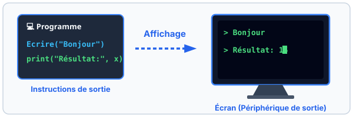
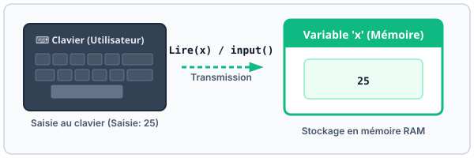
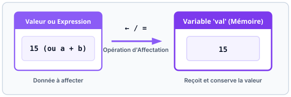

Cours
1. La sortie
La sortie, ou l'affichage, se fait par défaut sur le périphérique de sortie standard : l'écran.
L'opération de sortie se fait en algorithme à l'aide de la procédure
Écrire(...).
En Python, elle se fait à l'aide de la fonction print(...).

| 📐 Algorithme (Écrire) | 🐍 Python (print) | 💡 Description |
|---|---|---|
|
|
Affichage d'un message texte simple |
|
|
Affichage de la valeur stockée dans une variable |
|
|
Affichage mixte de texte et de variables |
2. L'entrée
L'entrée, ou la saisie, des données utilisateur est effectuée à partir du périphérique d'entrée standard : le clavier.
On utilise, en algorithme, Lire(nom_var) pour affecter les entrées de
l'utilisateur à la variable nom_var.
En Python, l'entrée des données est effectuée à l'aide de la fonction
input(message). Cette fonction retourne toujours une chaîne de caractères (type
str).

| 📐 Algorithme (Lire) | 🐍 Python (input) | 💡 Type de donnée |
|---|---|---|
|
|
Chaîne de caractères (str) |
|
|
Entier relatif (int) |
|
|
Nombre réel (float) |
3. L'affectation
L'affectation permet de donner une valeur à une variable.
En algorithme, on utilise le signe d'affectation ← comme suit :
variable ← valeur.
En Python, l'affectation se fait à l'aide de l'opérateur = comme suit :
variable = valeur.

La valeur affectée à une variable peut-être :
- Une constante (ex:
a ← 5) - La valeur d'une autre variable (ex:
b ← a) - Le résultat d'une expression (ex:
d ← a / 3)